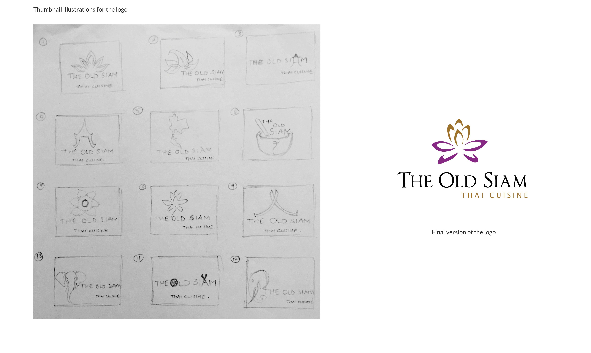

The Old Siam
Goal: To re-brand an existing restaurant by redesigning its logo and changing the current perception and design language of the company.
The aim was to create a high-end menu with a unique fold and die cut which would present the client as a high end establishment and give a sense
of the kind of food and service they provide.
The project also required to incorporate cultural references based on the kind of food served, leading to research about the country values.
Logo


Business cards

Menu back-side

Menu front-side
Gift cards

Coaster

Takeout box

Salt-n-pepper packets